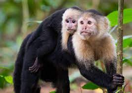

Dado que son especies del Nuevo Mundo, se encuentran solamente en América, distribuidos específicamente en América Central y América del Sur, siendo el norte de Argentina su límite de rango. Los capuchinos gráciles se extienden a través de Centroamérica hasta el norte- noreste de Sudamérica. Por su parte, los capuchinos robustos viven en el este y parte del oeste sudamericano. Algunos países que los albergan son Honduras, Colombia, Perú, Brasil, Venezuela y Argentina.
